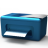

 | Arrange and print sections of the graphics area. A print preview is displayed. → |
To print a single view, 'Single view' must be visible. Otherwise, the images are printed, as shown in the “Print box preview’.
Print settings
Printer: Select an installed printer and specify the printer settings  . Select the settings on the basis of the printer description. The printer name is displayed.
. Select the settings on the basis of the printer description. The printer name is displayed.
Page: Set up the page for printing  . Select the paper size, orientation and width of the margins.
. Select the paper size, orientation and width of the margins.
The unit of measure for the margins and the ISO / ANSI page size are synchronized with the operating system settings. Use the ‘Region and Language’ and ‘Devices and Printers’ settings of the operating system to make changes.

Single view
The single view is added to the selection in the 'Print box layout'  .
.
Print area: Select the size of the section for the print area. Use the All option to print the entire graphics area, including outside the visible area  . Select the Current view option to print the visible section of the graphics area
. Select the Current view option to print the visible section of the graphics area  . Under Select, use the Point option to select a section
. Under Select, use the Point option to select a section  . Click in the graphics area with the left mouse button, drag the mouse and click the left mouse button again.
. Click in the graphics area with the left mouse button, drag the mouse and click the left mouse button again.

Scale: Fit the size of the section automatically to the page  or select a factor with which to scale the section
or select a factor with which to scale the section  . For example, a factor of 2 will scale the section to half its size and a factor of 0.5 will scale the section to twice its previous size. You can select a factor within a range of 0.0001 to 10,000.
. For example, a factor of 2 will scale the section to half its size and a factor of 0.5 will scale the section to twice its previous size. You can select a factor within a range of 0.0001 to 10,000.
Vertical alignment and Horizontal alignment: Align the section of the graphics area in the print area horizontally (Left, Center or Right) and vertically (Top, Middle or Bottom)  .
.


Effects: Do not print the currently selected background colors using theWhite background option  .
.
Darken the entities: Entities are darkened for the printout and not colored.
Footer: Optionally, print Document name, User name and Date and time  .
.
Title block
Drawing frames: Activate the option for a layout with frames and select a template . Templates compatible with the printer settings are provided. If no template can be selected, no suitable templates were found.
Title block: Activate the option for a layout with title block and select a template .
Value table: Enter information for the title block in the value table. Use Apply values to transfer the information to the title block. User defined tags and system tags are listed. User defined tags are applied from the template.
Footer: Optionally, print Document name, User name and Date and time .
Print box layout
The layout is created by means of a grid of columns and rows  . Specify the number of Columns and Rows. Keeping the left mouse button pressed, draw the views from the list to the desired positions within the grid
. Specify the number of Columns and Rows. Keeping the left mouse button pressed, draw the views from the list to the desired positions within the grid  . If the Shift key is pressed at the same time, the views will be moved from the list to the grid. Views are deleted from the grid via DEL.
. If the Shift key is pressed at the same time, the views will be moved from the list to the grid. Views are deleted from the grid via DEL.

Print box preview
Size: Optionally fit the size automatically into the area defined by the page format and margin plus the printer driver page margins. Then choose a practical factor for scaling the section. Specify a factor for scaling if the Fit option is not selected with Custom.
Minimum distance: Enter distances from the margin for Top, Bottom, Left and Right  and a distance Between views
and a distance Between views  .
.

Effects: Do not print the currently selected background colors using the White background option . Change display of text, dimensions and wireframe in wireframe view to a monochrome black view using the Monochrome wireframe option  .
.
Darken the entities: Entities are darkened for the printout and not colored.
Layout name: Format layout, specify a name and save.
Layout table: A list of saved layouts for printing. Select a layout and right-click Open on the context menu. Right-click Delete on the context menu to remove the selected layout from the table.